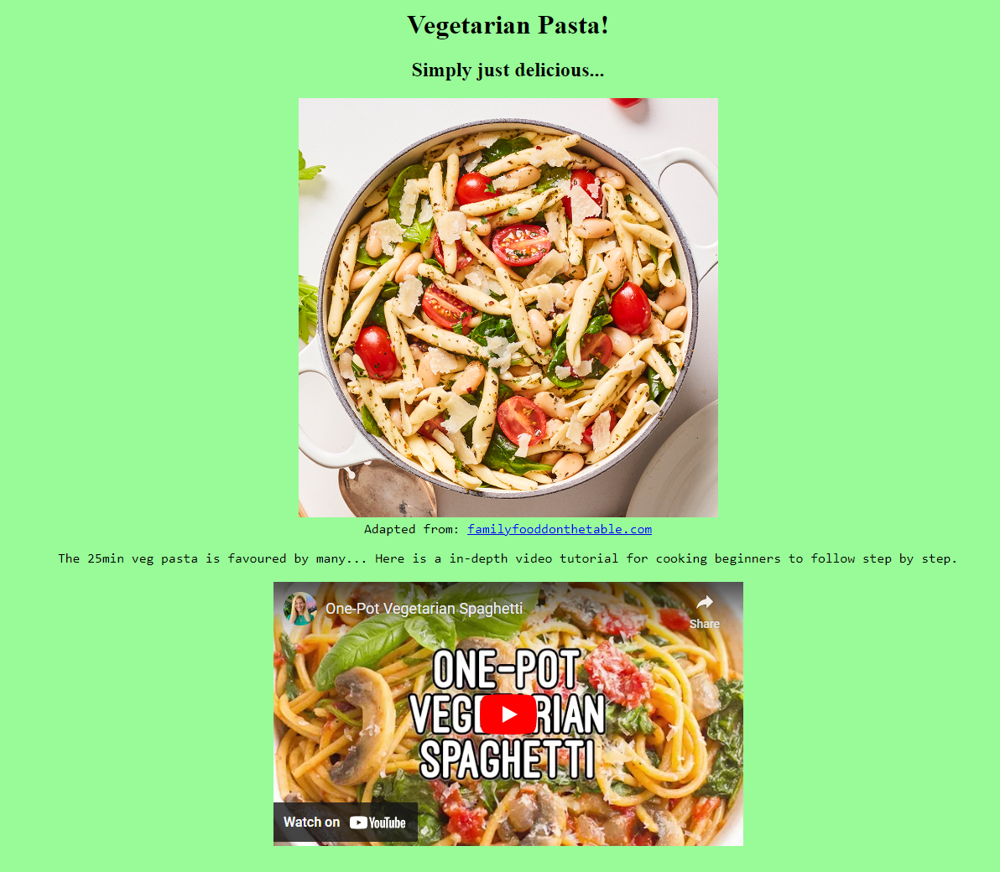

-Week 1-

Started learning about web development, how a website is brought together by HTML, CSS and JavaScript.
HTML, also known as Hypertext Markup Language is to be considered the backbone of a website. While CSS, Cascading Style Sheet works as an aesthetics designer.
Last but not least, JS which is JavaScript, works as the brain. With all of these combined, website creation is possible!
The picture above was my 1st creation of website introduced as a CA to be completed in the first week of lesson. Initially, i didn't know what concept of design that should implemented,
what food to show and the necessary steps to make the website visually more attractive. After much consideration, i decided to create a template first, the interface where my text would be, pictures and background color.
After some online self-help tips on arranging certain text and image to proper sizes. My first website was live!
-Week 2-
Semantic html css was covered. There are header, nav, article and section. Individually, they all work differently and bring out various results.
Header are the headers for a website. Nav is navigational buttons / links to different elements in the same existing site. Articles are a small portion of space to
fill in all the important details and lastly, section is a small portion of space similar to article but made larger for content and topics.
-Week 3-

Media queries and flexbox were introduced. When different devices visit websites, media queries are responsible for alternating and changing some
viewpoints across the different IT devices, which is setting up min-width and max-width views to keep the website look proportional. Other than that, flexbox are
also used to adapt the layout to suit contents such as mobile layout that is vertical and desktop layout which is horizontal.
Week 4-

Learned about responsive images, basically they will automatically resize the image / picture based on the device's screen.
This way, it can process higher resolution images when needed which also provides more efficiency on design control.